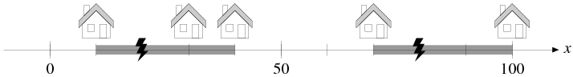

Time Limit: 5 sec
ある過疎地域での話である． この地域ではカントリーロードと呼ばれるまっすぐな道に沿って， 家がまばらに建っている． 今までこの地域には電気が通っていなかったのだが， 今回政府からいくつかの発電機が与えられることになった． 発電機は好きなところに設置できるが， 家に電気が供給されるにはどれかの発電機に電線を介してつながっていなければならず， 電線には長さに比例するコストが発生する． 地域で唯一の技術系公務員であるあなたの仕事は， すべての家に電気が供給されるという条件の下で， できるだけ電線の長さの総計が短くなるような発電機 および電線の配置を求めることである． なお，発電機の容量は十分に大きいので， いくらでも多くの家に電気を供給することができるものとする．
サンプル入力の1番目のデータセットを図2に示す． この問題に対する最適な配置を与えるには， 図のように x = 20 と x = 80 の位置に発電機を配置し， それぞれ図中のグレーで示した位置に電線を引けばよい．
|  |
| 図2: 発電機と電線の配置の例（入力例の最初のデータセット）． |
入力の1行目にはデータセットの個数 t (0 < t ≤ 50) が与えられる．
引き続き t 個のデータセットが与えられる． データセットはそれぞれ次のような形式で2行で与えられる．
n は家の戸数，k は発電機の個数である． x1, x2, ..., xn はそれぞれ家の位置を表す一次元座標である． これらの値はすべて整数であり， 0 < n ≤ 100000, 0 < k ≤ 100000, 0 ≤ x1 < x2 < ... < xn ≤ 1000000 を満たす．
さらに，データセットのうち 90% は， 0 < n ≤ 100, 0 < k ≤ 100 を満たしている．
各データセットに対し， 必要な電線の長さの総計の最小値を1行に出力せよ．
6 5 2 10 30 40 70 100 7 3 3 6 10 17 21 26 28 1 1 100 2 1 0 1000000 3 5 30 70 150 6 4 0 10 20 30 40 50
60 13 0 1000000 0 20